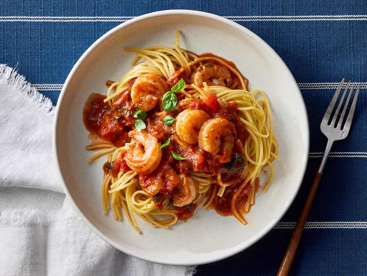

Shrimp Marinara

Go back
Description
"This is great for a quick weeknight meal, but I could also see it as a candlelight dinner for two," recipe developer Juliana Hale says of this shrimp marinara recipe.
Ingredients
- 12 ounces dry spaghetti
- 3 tablespoons extra virgin olive oil
- 1 pound large shrimp, peeled and deveined
- 4 cloves garlic, sliced
- 1/2 teaspoon crushed red pepper
- 1 (15-ounce) diced fire-roasted tomatoes
- 1 (15 ounce) can tomato sauce
- 1/4 cup chopped fresh basil, plus more for garnish
- 1 tablespoon balsamic vinegar
- 1 teaspoon dried oregano
- 1/4 teaspoon kosher salt
Steps
- Prepare spaghetti according to package directions; drain and keep warm.
- Meanwhile, heat oil over medium heat in a large skillet. Add shrimp and cook 2 to 3 minutes or until nearly opaque, turning once.
- Transfer shrimp to a plate. Add garlic and crushed red pepper to the skillet. Cook and stir until fragrant, about 1 minute.
- Stir in undrained tomatoes, tomato sauce, basil, balsamic vinegar, oregano, and salt. Bring to a boil. Reduce heat and simmer, uncovered, until thickened, 10 minutes.
- Return shrimp to skillet and simmer to heat through, about 1 minute. Serve over spaghetti, topped with additional fresh basil.
Go back